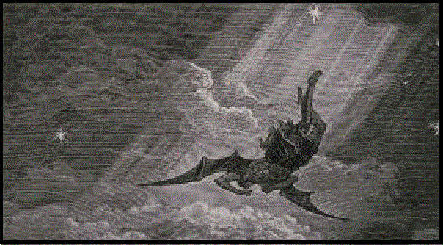
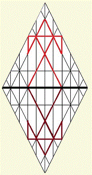

|
site |
book |
|
The Mystery of Iniquity |
|  |
| The name Lucifer means "Light Bearer." The
covering cherub of heaven, Lucifer was perfect in all his ways until iniquity
was found in him. It is commonly understood that "iniquity" is "grossly
unfair or immoral behavior." If that was the case, Lucifer's perfection was
conditioned on his performance: "perfect in all his ways, righteousness
was his to achieve and maintain, and his to
lose. If so, the inquity found in the Light Bearer was generated by an
active, narcissistic
pride, as it's written, "Pride goes before destruction, and a haughty spirit before a
fall." If Lucifer's fall was due to wickedness, the question arises: "What was God's intent when appointing the great angel as the 'covering cherub'?" We are instructed t hat HaShem, alone, is perfect in all his ways; and so, Lucifer was perfect only so far as he rested in the perfection of the Father. My view of the judgment that befell Lucifer is that the imperfection discovered in him came from a bending of the light he carried, and not because of some innate fault of his character. Lucifer's his fall came subsequent to the creation of Earth: the judgment was that he should be cast down to Earth, where he would live and die as a human being. Because it is said that he bore the perfect Light of HaShem within himself before the fall, the iniquity that was, later, found in him must have "crept into him: unawares," to borrow the phrase. Many equate Lucifer with the devil, but scripture does not accuse him of error: only that iniquity was found in himl\ the perfection he once enjoyed was sullied from within. If fault there was, the light Lucifer carried must have played some part in his deteriorization. Light behaves in accordance with the dynamics present within all created things. The weight of the light he carried must have been the cause of his corruption. Light, like all created this, is subject to the pull of inertia; for the force of gravity accompanies all mass in Creation, even if that mass is sub-atomic. If that is the case, iniquity has little to do with the tug-of-war between light and darkness, good and evil. Iniquity is the spiritual equivalent of the latent force of inertia. This is a reasonable conclusion; for the invisible things of God are visible in the things that are made, suggesting that iniquity is spiritual gravity, whose weighty pull marred Lucifer's perfection. Just as natural light curves as it arcs across the vast dimensions of the universe because of the pull of mass, spiritual light is also affected by body mass, whether the life form is human or angelic. I don't believe that the fate of Lucifer was the result of sin or some behavior error, precisely; rather, I think the iniquity found in him was akin to the nature of the Light, itself: At the core of all things, light is the cohesive element of the universe. Even rocks are children of Light: over eons, light became trapped in the pull of matter. Rocks absorb it, vegetation drinks it down, storing it in roots, that it may transform it into food to sustain animal life. Without the phenomenon of light, there would be nothing at, nor would there be any where. I conclude that Lucifer's fall did not disqualify him from grace; for the iniquity found in him was not of his doing, but was akin to the pull inertia imposes upon Creation' matter. Neither good nor bad, inertia is a latent force capable of bending light; and Lucifer's imperfection was among its effects. With the command, "Let there be," Lucifer was fated to tumble from the immortal realm into the mortal realm, vulnerable to the phenomenon of acretion, which is akin to incarnation. Although light has a nearly negligible mass, the weight of its photons renders it succeptible to the iniquity of gravity. Beginnings have endings. The loss of Lucifer's heavenly state brought radical change, but not tragic change. God is good. Aware of that goodness, the angels of HaShem shouted for joy at the creation of man, whose physical form, comprised of stored light, that is capable of receiving, then reflecting or projection, spiritual light as well. As time unfolded, mankind would become chariots of Ruach HaQodesh, God's Holy Spirit, serving as vehicles for angelic transformation. Living and dying as men, the hosts of heaven would enter upon the task of establishing unique identities they could carry into life everlasting, which was HaShem's intent, from the beginning. The great wedding feast aproaches; and on that day, the incarnate souls who loved the Light of God will become transfigured, no longer mere bearers of Light, but as beings of Light.Working out their perfection during their lives on Earth, they shall become transformed into beings of Light through the renewal of their minds. This mystery is among the things the early followers of Y'shua were unable to bear. They were unprepared: not because of failings or weaknesses, but because the demands of order follow sequence. The walk in the steps of messiah is led and paced by Ruach HaQodesh, which rewards he faithful with gifts of knowledge concerning the nature and ways of HaShem. There was war--unruliness-- in Heaven because it was of paramount importance that God's sons learn and understand "this," so they would be able to endure, conquer, and triumph over "that." In times past, the apostle lamented that the mystery of iniquity was alr already at work among early believers in the Way, the Truth, and the Life. From the last seder of mashiyach Y'shua to the uproars of this present day, stumbles among believers were apparent and remain apparent. The weight of iniquity takes its toll because the lessons are difficult: impossible, except through the guidance of HaShem, and that's the point: the path of the cross leads to knowledge of the intersection of the mortal and immortal realms, teaching us of God's love as we make our way back home. Far greater than the light found in natural man, the Light within spiritual man is the very essence of the Godhead. Called to walk in the perfection of Father and Son, mankind must carry the Treasure of God's Light, which is the very Life of HaShem, in earthen vessels that must have an end. Living the life of the Spirit in mortal bodies is a dynamic experience, and the mass of physical man man's body exerts the equivalent of the latent force of inertia within the new creature, the spiritual man. This is why Paul saw two laws operating within himself, and why the scripture speaks of twins struggling within the womb. This is why it is written, "I would not have you ignorant; for the end shall not come, except there be a falling away, first." The fabled phoenix once flew near the Source of Light, but its wings caught fire, and the creature burned, falling to the ground at its first approach to the light of heaven. Having fallen back to Earth, it was incumbent upon the phoenix to gather itself from its ashes and to rise again. A roughly equivalent experience unfolds as natural man is consumed by inward fires, is reborn of the Holy Breath and rises again as spiritual man, joining the procession leading to the great wedding feast of the Messiah of Matthew 1:1, while walking in the steps of the man of Matthew 1:16. In their awakend state, walking the Earth in tandem with the Salvation that comes by the will of God, believers are able to add knowledge to experience as, rising from the ashes of the errors, they again approach the gates of Heaven. It is inevitable that the new creature rising from the waters of baptism should stumble. Offense will come, and woe to them who are the cause of it; but mercy and restoration will come upon those who must experience offense. If we say we are without sin, we deceive ourselves; and the truth is not in us. If we confess our errors-- our sins, however, the Holy Father of us all is faithful to forgive us and to cleanse us from all unrighteousness.The filthy rags we wore in unrighteousness are replaced with spotless clothing not in the pew, but in the world's ditches, as those putting on the whoe armour of God in Messiah Yahushua lend helping hands to fallen brothers. Should believers cordon themselves off from others they perceive to be unrighteous sinners in order to protect their mistaken sense of their own righteousness, they will discover that their lamps lack oil at the great wedding feast. Itcomes nearer with every darkening day of Earth. If we say we have no sin, no error, we deceive ourselves; and the Truth is not in us. By this we shall know that we are disciples of Master Y'shua, the Essene Teacher of Righteousness: that we have love for one another: and not only for others we see as good, but for all who live. Judge not. Accuse not. Remain open to love. |
|
|||||||||